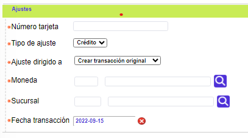
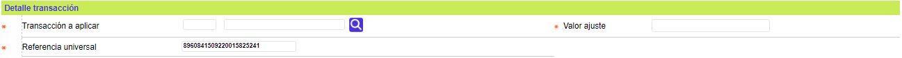
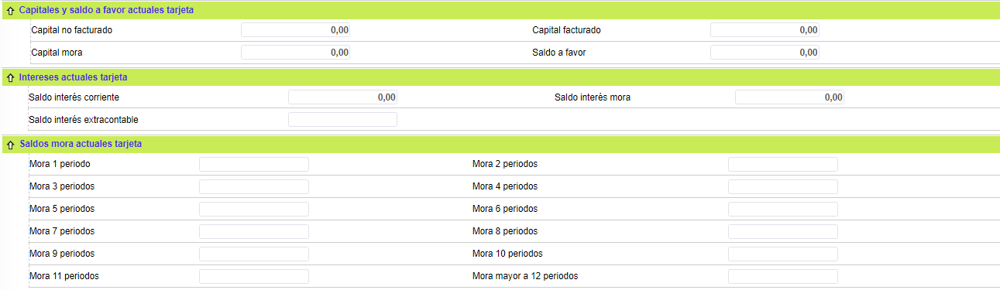
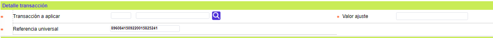
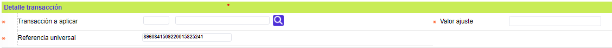
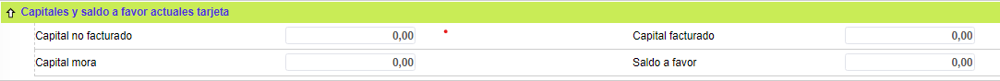
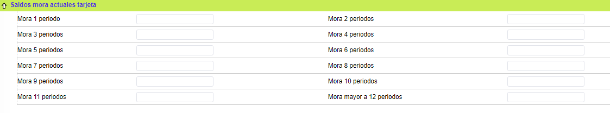
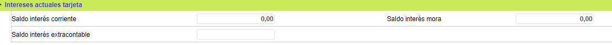
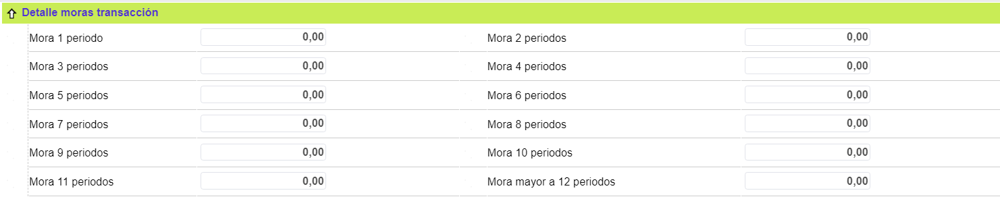

Ajustes monetarios |
Mediante esta opción el Sistema BankBú® ofrece la funcionalidad que permite generar las diferentes transacciones monetarias requeridas para afectar los saldos de la obligación de un cliente, las cuales pueden ser de naturaleza débito o crédito. Permite compensar valores o saldos de una transacción, de una línea de crédito, de una moneda o de una tarjeta. El campo Ajuste dirigido a facilita la captura de los ajustes, pues al seleccionar de la lista alguna de las transacciones allí contenidas, se alimentan automáticamente varios de los campos requeridos minimizando la labor y la ocurrencia de errores.
El formulario cuenta con un wizard de dos pasos:

Número tarjeta |
Campo en el que se registra el número de la tarjeta sobre la que se realiza el ajuste monetario y cuyos saldos se verán afectados una vez sea aplicada la transacción correspondiente. |
Tipo de ajuste |
Este campo cuenta con lista de valores adjunta de la que debe seleccionarse entre Débito o Crédito la naturaleza que corresponda con el ajuste monetario a realizar. |
Ajuste dirigido a |
Campo que posee lista de valores de la cual debe seleccionarse entre Ajuste a transacción crédito, Ajustes saldos a favor, Crear transacción original, o Ajuste a transacción débito; opciones que aparecen total o parcialmente, dependiendo de la clase o naturaleza del ajuste y el objetivo de la afectación monetaria a realizar. Tipo de ajuste Crédito habilita las opciones: (Crear transacción original, o Ajuste a transacción crédito). Tipo de ajuste débito habilita (Crear transacción original, Ajuste a transacción débito, Ajuste a transacción crédito, y Ajuste saldo a favor). |
Moneda |
En este campo se selecciona de la lista de valores la Moneda en que se denomina la transacción del ajuste. |
Sucursal |
Campo que posee lista de la cual se selecciona la sucursal a través de la cual se gestiona el ajuste. |
Fecha transacción |
Contiene la fecha en la cual se realizó la transacción o en caso de la creación de un cargo no registrado, contiene la fecha asociada a la nueva transacción. |
Una vez ingresada esta información, al utilizar el botón siguiente el sistema despliega el segundo formulario, mínimo con los siguientes bloques de información: Detalle transacción y Saldos transacción (Capital, Intereses, Moras y Saldo a favor).

El bloque Detalle de la transacción, debe desplegar los campos dependiendo hacia qué va dirigido el ajuste. Si el ajuste es crear una transacción original o va dirigido al saldo a favor de la tarjeta, el sistema debe desplegar los campos Transacción a aplicar, Valor ajuste y referencia universal únicamente:
Si el ajuste es débito y va dirigido al saldo a favor de la tarjeta, se deben desplegar además los campos Tipo y Número de cuenta:

Si el ajuste es débito y es crear una transacción original, se debe desplegar además, el campo Plazo.
Si el ajuste es débito, es crear una transacción original y es una transacción cuyo concepto es Compra, se debe desplegar además, el establecimiento.

Si el ajuste va dirigido a otra transacción, el sistema debe desplegar los campos Transacción a aplicar, Transacción tarjeta, Valor ajuste y Referencia universal:
Detalle transacción: Conjunto de campos que son tanto de salida como ingresables dependiendo de si se trata de un ajuste a una transacción existente o por el contrario a la creación de una transacción nueva.
Transacción a aplicar |
Campo con lista de valores, que para el caso de transacciones de naturaleza débito despliega la secuencia o número que identifica cada transacción que ha ingresado al sistema. |
Transacción tarjeta |
Este campo posee lista de valores poblada mediante el movimiento histórico de las transacciones, filtrada por la clase o naturaleza del ajuste. Cuando se trata de afectar una transacción existente, la lista despliega la información básica, suficiente y necesaria que le permite al usuario ubicar exactamente la transacción a afectar. |
Valor ajuste |
Este campo despliega, en principio, el saldo que presente la transacción o en su defecto puede contener el monto que se desea ajustar o el valor de una nueva transacción cuando se desea crear ésta. Si se trata de una ajuste a una transacción existente el monto se descompondrá en los conceptos correspondientes. |
Establecimiento |
Campo que permite ingresar el código del establecimiento en donde se realizó la transacción. Cuando se define que la moneda de la transacción es pesos, el aplicativo validará la información del establecimiento y si es correcto desplegará el nombre asociado al código ingresado. Cuando se define una moneda diferente a pesos el aplicativo no valida el código y permite ingresar cualquier dato en este campo inclusive letras hasta un máximo de 11 caracteres. |
Plazo |
Despliega el número de periodos solicitados por el cliente o asignados por el sistema sobre la transacción realizada o en caso de la creación de un cargo no registrado, contiene el número de periodos solicitados por el cliente para amortizar la nueva transacción. |
Referencia universal |
Registra la referencia universal asignada por el sistema a cada transacción registrada dentro del mismo, la que en adición a la secuencia, permite identificar claramente cada una de las transacciones. |
Tipo cuenta |
El campo Tipo cuenta debe contener combo con los valores Ahorros, Corriente y Rotativo. Debe traer un valor diligenciado por defecto y permitirle al usuario dejarlo igual o modificarlo. |
Número cuenta |
El campo Número cuenta admite cualquier dato alfanumérico de máximo 16 caracteres. Permite mayúsculas y minúsculas. |
Saldos transacción: La información contenida en estos campos aplica exclusivamente para las transacciones que ingresaron al sistema previamente, ilustra el estado actual de los saldos de la transacción por cada uno de los principales conceptos.
Capital no facturado |
Campo que ilustra el monto de los diferidos pendientes por cancelar después de efectuar el pago mínimo, los consumos o utilizaciones realizados después de la fecha de la última facturación y los ajustes monetarios que incrementen el saldo tales como reversiones de pagos erróneamente aplicados, etc |
Capital facturado |
Indica la porción de los diferidos a ser cubierta mediante el pago mínimo. |
Saldo interés corriente |
Presenta el monto resultante de la liquidación del beneficio esperado por la entidad sobre el saldo del capital vigente. |
Saldo interés mora |
Señala el monto resultante de la liquidación del beneficio adicional esperado por la entidad sobre el saldo del capital en mora. |
Saldo interés extracontable |
Muestra el monto resultante de la liquidación del beneficio esperado por la entidad sobre el saldo del capital cuya altura de mora supere los 90 días. |
Mora 1 periodo ... Mora mayor a 12 periodos |
Agrupación de campos que ilustran el estado actual de los saldos de la transacción por este concepto, acorde con la altura de mora correspondiente. |
Si el ajuste es dirigido a una transacción débito, esta pantalla debe desplegar un bloque adicional con los Saldos de la transacción débito seleccionada por el actor.
Si el ajuste es dirigido a una transacción débito, en este bloque de los saldos de dicha transacción, el sistema debe desplegar los campos: Capital facturado, Capital no facturado, Capital en mora del 1 al 12, Interés corriente, Interés de mora e Interés extracontable, reflejando los saldos actuales de estos conceptos en la transacción a la cual se dirige el ajuste. Ninguno de los campos debe permitir ser modificado

Detalle moras transacción: Agrupación de campos que permiten distribuir el ajuste, por este concepto, acorde con la altura de mora correspondiente.
Si el ajuste va dirigido al Capital en mora, se debe desplegar el bloque Detalle moras transacción con los campos desde Mora 1 Periodo, ... hasta Mora 11 Periodo y Mora más 12 Periodos.

Mora 1 periodo ... Mora mayor a 12 periodos |
Conjunto de campos que permiten distribuir por cada uno de los diferentes periodos o alturas de mora, el ajuste por concepto de los intereses de mora. Estos campos de detalle moras deben admitir cualquier dato numérico de máximo 16 dígitos, 14 enteros y dos decimales. |